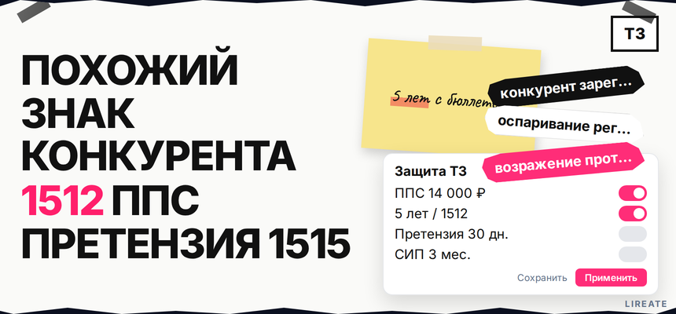
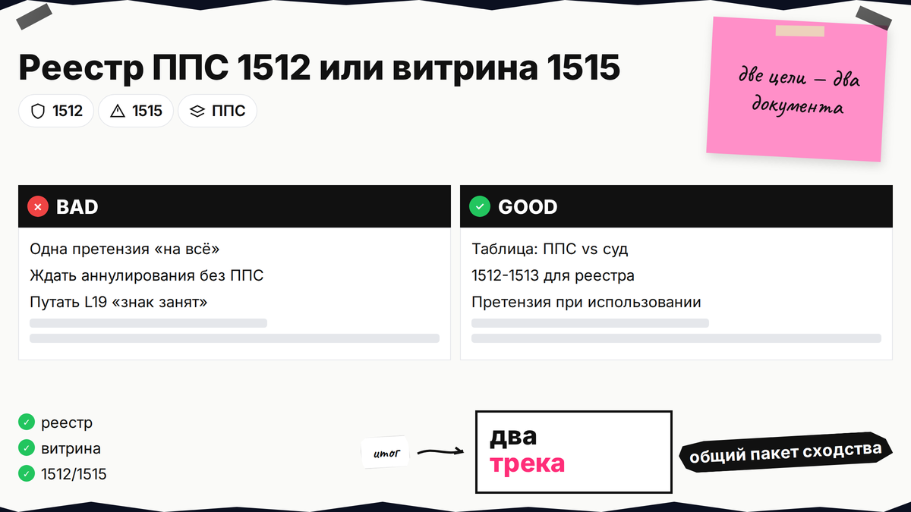
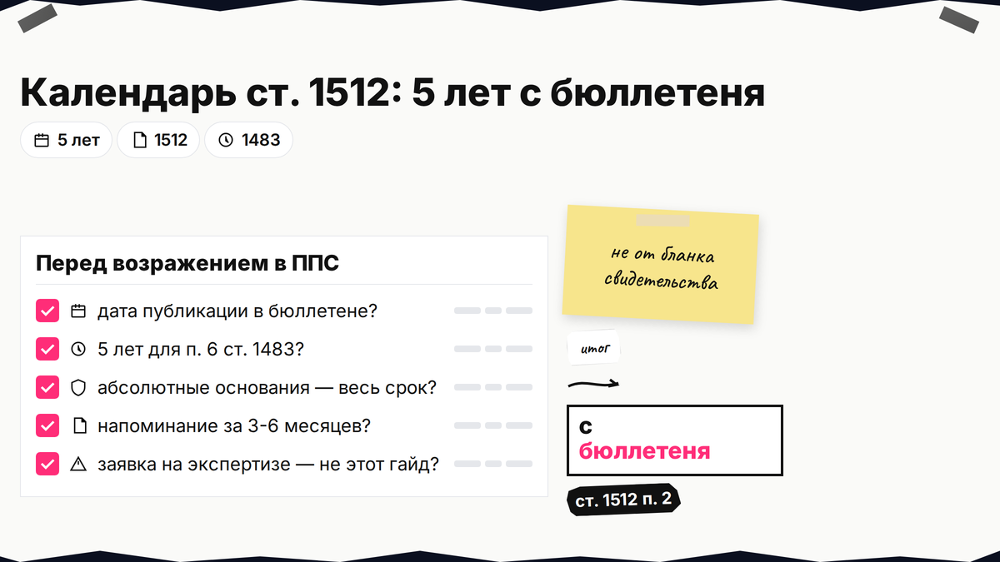
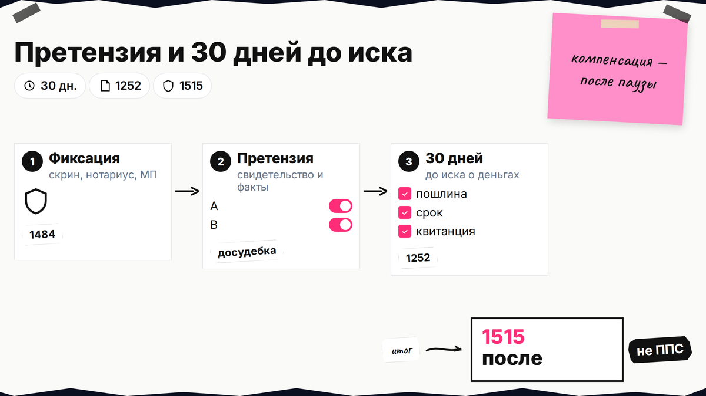

Конкурент получил свидетельство на похожее имя или логотип, и покупатели путают ваш бренд с его витриной. Запрос "конкурент зарегистрировал похожий товарный знак" не решается одной претензией: сначала отделите аннулирование записи в Роспатенте и запрет использования на рынке. Ниже - реестр, сроки по ст. 1512, возражение в ППС, досудебка по ст. 1252 и суд без смешения веток.

TL;DR / Быстрый инсайт: При чужом свидетельстве идите в ППС по ст. 1512-1513 (пошлина 14 000 ₽). По сходству (п. 6 ст. 1483) - 5 лет с публикации в бюллетене. На витрине - претензия, иск по ст. 1515, 30 дней до денежного иска. Подача - L08, карта - L21.
Материал для владельца бренда и in-house юриста на Лирейт. Нормы сверены на 05.11.2026; это маршрут действий, не индивидуальная консультация. ППС (Палата по патентным спорам) - коллегия Роспатента, которая по ст. 1513 может признать охрану недействительной и аннулировать запись в реестре. Если вы еще не подавали заявку - откройте план при занятом обозначении; здесь конкурент уже в реестре.

Реестр и витрина - разные процедуры.
Товарный знак - зарегистрированное обозначение (слово, логотип), которое отличает ваши товары. У конкурента уже есть свидетельство на похожее имя: либо убираете запись из реестра, либо останавливаете использование на рынке, либо оба трека.
| Ваша цель | Инструмент | Куда идти |
|---|---|---|
| Аннулировать чужое свидетельство | Возражение по ст. 1512-1513 | Палата по патентным спорам (ППС) при Роспатенте |
| Остановить использование на рынке | Претензия, затем иск по ст. 1514-1515 | Досудебка, арбитраж или суд общей юрисдикции |
| И то, и другое | ППС + претензия параллельно | Два трека с общим пакетом доказательств сходства |
| Еще не регистрировали свой знак | Проверка, доработка, лицензия | Другой сценарий - см. L19, не этот гайд |
Сделайте: до оплаты пошлин зафиксируйте, нужен ли через полгода чистый реестр, тишина на маркетплейсе или оба результата. Не делайте: отправлять одну "универсальную" претензию и ждать, что Роспатент сам снимет чужое свидетельство без возражения в ППС.
Делайте: показать однородность не "на глаз", а по формулировкам позиций в перечне МКТУ. Не делайте: путать похожий стиль дизайна с юридическим сходством до смешения, если слова и классы разные.

Срок 5 лет считают от бюллетеня, не от бланка свидетельства.
По п. 2 ст. 1512 при сходстве (п. 6, 7, 10 ст. 1483) - 5 лет с публикации в бюллетене; по абсолютным основаниям (п. 1-5, 8-9 ст. 1483) - часто весь срок охраны. Если заявка конкурента еще на экспертизе, это другой сценарий (ст. 1493). Календарь до заседания - в гайде L08. Делайте: напоминание за 3-6 месяцев до конца пятилетки. Не делайте: считать 5 лет от даты на бланке свидетельства.
Возражение подает заинтересованное лицо (ст. 1513 п. 2): владелец старшего знака, лицензиат или иной, кого регистрация конкурента реально ущемляет. Пошлина 14 000 ₽ (п. 2.28.4, тарифы Роспатента). Подача - письменно, через окно или электронно; заседание - обычно в течение двух месяцев (Правила ППС 644/261).
Делайте: готовить ответы на возражения правообладателя до заседания. Не делайте: подавать возражение в последний день пятилетки без запаса на технический сбой оплаты и доставки.

Регистрация не равна использованию на витрине.
Если знак на сайте, маркетплейсе или упаковке, работает ст. 1484 - это ветка претензии и иска, не ППС.
Делайте: вести переговоры о лицензии после претензии, если бизнесу важнее договор, чем многолетний спор. Не делайте: требовать компенсацию в арбитраже сразу после претензии без выдержки 30 дней. На маркетплейсах часто помогает связка претензии правообладателя и обращения площадки при явном сходстве карточки с вашим знаком.
Иск о нарушении не заменяет ППС: суд не аннулирует свидетельство тем же документом, что коллегия. По ст. 1515 п. 4 - компенсация от 10 000 до 10 000 000 ₽, убытки или двойная стоимость контрафакта после досудебки. Решение Роспатента оспаривают в СИП за 3 месяца (ч. 4 ст. 198 АПК РФ, ст. 1248, ст. 1513 п. 4). Делайте: приложить таблицы сходства из ППС и доказательства использования на витрине. Не делайте: пропускать 3 месяца после отказа ППС.
Маршрут при похожем знаке конкурента в реестре:
Реестр и сходство → календарь ст. 1512 → возражение в ППС (14 000 ₽) → при использовании знака: фиксация → претензия → 30 дней → иск по 1515 → при отказе ППС: СИП (3 месяца)
Итоговый вердикт: Только регистрация без витрины - чаще 1512-1513. Знак в рекламе и на маркетплейсе - параллельно претензия и 1515. Пакет по защите ТЗ - с поверенным, рубрика "Товарный знак".
Материал проверен: эксперт Елена Ковалева (главный эксперт по SEO/GEO), редакция Лирейт.
Достоверность данных: ст. 1483, 1484, 1512-1513, 1252 и 1515 ГК РФ, пошлина 14 000 ₽ по таблице Роспатента и Правила ППС сверены на 05.11.2026. Показы Яндекс Wordstat в среде подготовки материала не запрашивались.
Иногда - через доказанное использование, фирменное наименование или обращение по ст. 1493 на стадии заявки, но маршрут L33 рассчитан на ваше зарегистрированное или иное старшее право по ст. 1483 и 1512. Если вы только придумали имя - начните с плана при занятом обозначении и регистрации своего знака.
Пять лет с даты публикации сведений о государственной регистрации чужого знака в официальном бюллетене - для оснований по п. 6, 7, 10 ст. 1483 (ст. 1512 п. 2 пп. 2). Не от даты подачи заявки конкурента.
Нет. Аннулирование записи в реестре - это возражение по ст. 1512-1513 в ППС. Претензия нужна для ветки использования знака на рынке и для денежных требований по ст. 1515 в арбитраже.
Да для споров между юрлицами и ИП в арбитраже о компенсации или убытках: после направления претензии ждут 30 дней ответа или молчания (п. 5.1 ст. 1252).
Откройте пошаговый гайд по возражению и карту оспаривания в Роспатенте - там пакет документов, пошлина 14 000 ₽ и сроки коллегии без дублирования этого маршрута.
Там - своя заявка до регистрации; здесь - чужое свидетельство и маршрут ППС, претензия, суд.
При копировании канала продаж и рекламы - дополнение к ст. 1512 (п. 2 пп. 6), не замена ППС.